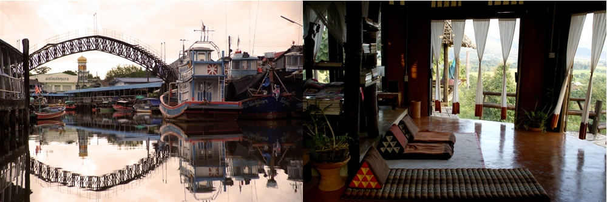
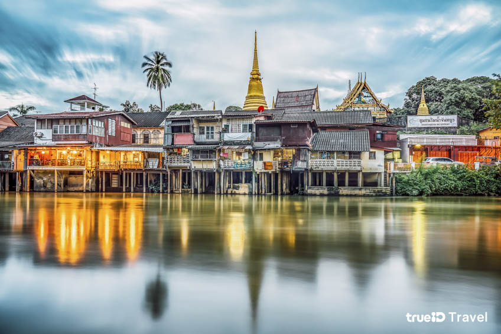
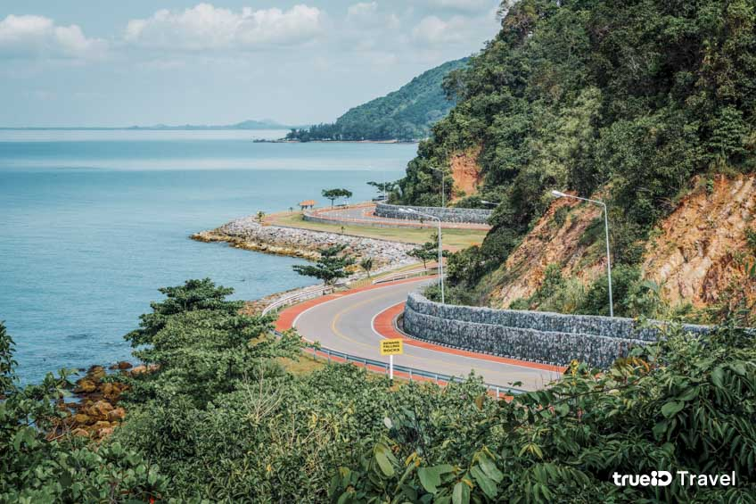
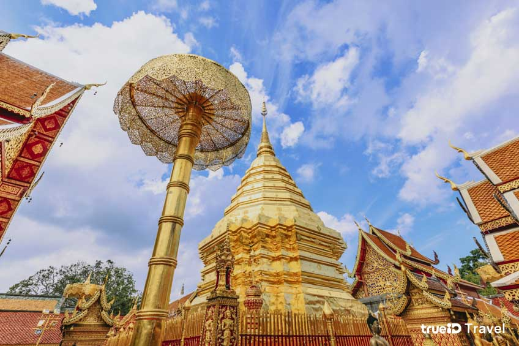

ท่องเที่ยวทั่วไทย

สมัยเป็นเด็กตำราเรียนสอนว่ารายได้หลักของประเทศไทยมาจากการขายข้าว แร่ดีบุก ไม้สัก และยางพารา นั่นคงเป็นอดีตเนิ่นนาน...
นานจนคนสมัยนี้ไม่อาจเข้าใจได้
เพราะหลายสิบปีมานี้รายได้หลักที่ทำให้ประเทศไทยยังสามารถเติบโตทางเศรษฐกิจได้นั้นมาจากอุตสาหกรรมท่องเที่ยว
บางคนอาจกล่าวว่าอุตสาหกรรมท่องเที่ยวเป็นรายได้ที่ไม่ต้องลงทุนสิ่งใดเลย ไม่ต้องหาวัตถุดิบ ไม่ต้องมีโรงงาน ถ้าจะลงทุนก็น้อยมาก
แค่แรงงานเพียงเท่านั้น และเก็บรักษาสิ่งสวยงามไว้ แค่นี้ก็ดึงดูดคนมาเที่ยวได้แล้ว นี่นับว่าเป็นความเข้าใจที่คลาดเคลื่อน
เพราะแท้จริงแล้วการรักษาคุณค่าของสิ่งต่าง ๆ ไม่ว่ามรดกทางธรรมชาติ หรือมรดกทางวัฒนธรรม ไม่ว่ามรดกที่จับต้องได้หรือจับต้องไม่ได้
เป็นสิ่งซึ่งต้องรักษาไว้ไม่ให้เสื่อมโทรมไปจากที่เคยเป็นเคยมีอยู่ และการรักษาไว้ให้คงอยู่ล้วนต้องดำเนินการโดยใช้ทุนทรัพย์เสมอ
โดยเฉพาะทรัพยากรทางการท่องเที่ยว ซึ่งมีทั้งที่จับต้องมองเห็นได้ หรือเป็นสิ่งที่ไม่อาจจับต้องได้แต่สัมผัสได้ด้วยความรู้สึก
การท่องเที่ยวจึงจำเป็นต้องดำเนินควบคู่ไปกับการดูแลรักษาแหล่งท่องเที่ยวที่เป็นเสมือนต้นทุนที่จะทำให้อุตสาหกรรมนี้ก้าวเดินต่อไป

ชุมชนริมน้ำจันทบูร
เป็นชุมชน 3 ศาสนา และย่านการค้าเก่าแก่อายุหลายร้อยปีทีบ้านเรือนส่วนใหญ่ยังคงความสวยงามด้านสถาปัตยกรรมไว้ได้เป็นอย่างดีค่ะ
ภายในชุมชน มีบ้านเก่า กิจการร้านค้า ร้านขายของ ที่พัก ร้านขนมทั้งสมัยเก่าและสมัยใหม่ และยังได้รับรางวัล Asia-Pacific Heritage Award
จาก UNESCO อีกด้วย เรียกได้ว่าเป็นอีกหนึ่งที่น่าเที่ยวที่พลาดไม่ได้เลยถ้ามาจันทบุรีเลย

จุดชมวิวเนินนางพญา
เป็นหนึ่งใน Dream Destination ที่พลาดไม่ได้ในการมาเที่ยวจันทบุรี แน่นอนว่า นอกจากเราจะมาชมความงดงามของ ถนนเฉลิมบรูพาชลทิต
ถนนเลียบชายฝั่งที่สวยที่สุดในภาคตะวันออก สัมผัสลมทะเล พร้อมวิวแบบพาโนรามาแล้ว ยังได้มุมสวยๆ ถ่ายรูปคู่กับถนนเลียบทะเล
เหมือนอยู่เมืองนอกทีเดียว และบริเวณใกล้ๆ กันนั้นมีบริการที่พักและร้านอาหารทะเลเรียงรายตามข้างทางอีกด้วย

วัดพระธาตุดอยสุเทพ
คนที่ไปเที่ยวเชียงใหม่แล้วไม่ได้ไป วัดพระธาตุดอยสุเทพ ถือว่าไปไม่ถึงเชียงใหม่ เลยทีเดียวค่ะ เพราะ วัดพระธาตุดอยสุเทพนั้นเป็นปูชนียสถาน
คู่เมืองเชียงใหม่มาตั้งแต่โบราณ ตั้งอยู่บนยอดดอยสุเทพ นอกจากนี้ยังมี บันไดนาคเจ็ดเศียร ซึ่งทอดยาวขึ้นไป 300 ขั้น และ เจดีย์สีทองทรงเชียงแสน
เป็นศิลปะล้านนาที่งดงาม อีกทั้งที่นี่เป็นพระธาตุประจำคนเกิดปีมะแมตามคติความเชื่อล้านนาอีกด้วย
| เกี่ยวกับเรา |
ทริป |
รีวิว |
หาเรื่องเที่ยว |
ติดต่อเรา |
| ข้อกำหนดและเงื่อนไข
การใช้เว็บไซต์ |
ฮานอย + ฮาลองเบย์
4 วัน 3 คืน |
ลุยเดี่ยวเที่ยวรอบโตเกีย
วตามเส้นทางรถไฟ |
มุยเน่ ทะเลทรายสีขาว
โออิชิ ปาร์ค จุดชมวิวภูเขาไฟฟูจิ
ริมทะเลสาบคาวากุจิโกะ |
FACEBOOK FANPAGE |